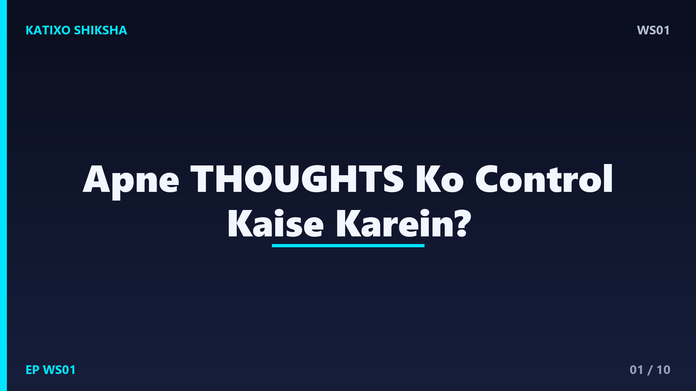
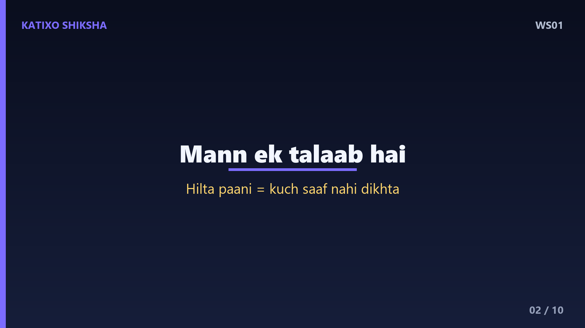
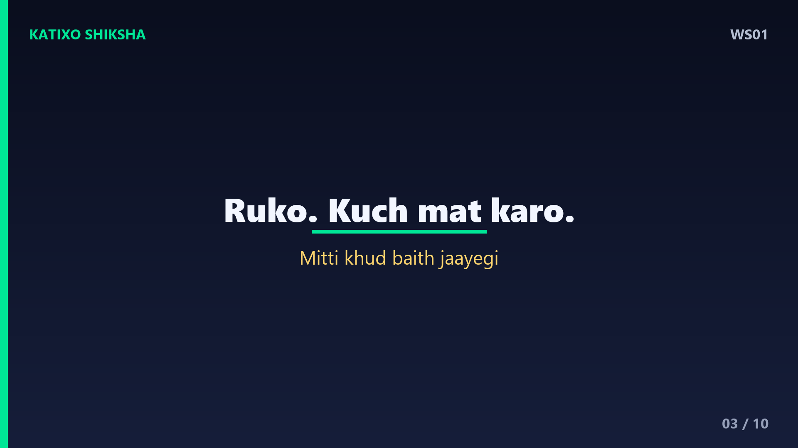
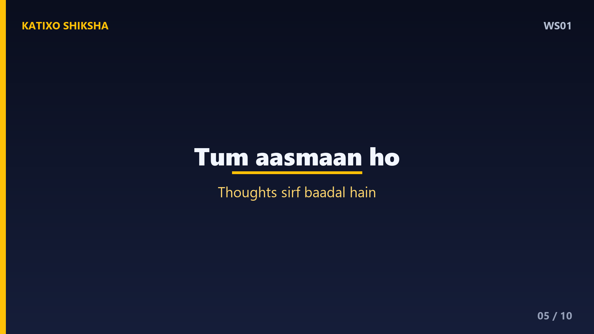
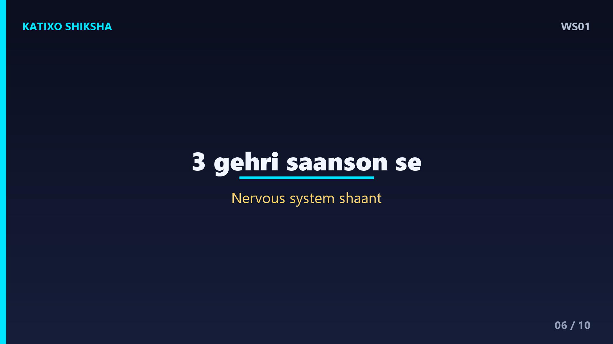
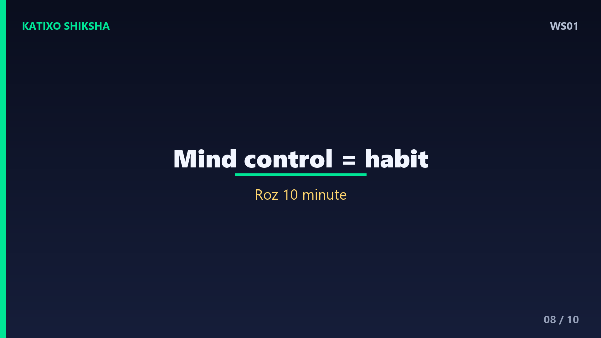

WS01 — Apne Thoughts Ko Control Kaise Karein?

Slide 1दोस्तों, एक सवाल — क्या तुमने कभी रात को सोने की कोशिश की है, लेकिn दिमाग रुकता ही नहीं? एक के बाद एक thoughts… tension, regret, future की चिंता। ऐसा लगता है जैसे हमारा mind हमारे control में ही नहीं है। पर सच ये है — तुम अपने thoughts के गुलाम नहीं हो, तुम उनके master बन सकते हो। आज की ये कहानी तुम्हारी सोच बदल देगी। चलो शुरू करते हैं।

Slide 2एक बार एक नौजवान एक बूढ़े साधु के पास गया और बोला — बाबा, मेरा मन बहुत बेचैन रहता है। हर वक़्त negative thoughts आते हैं, मैं थक गया हूँ। साधु मुस्कुराए और बोले — बेटा, तुम्हारा मन एक तालाब की तरह है। जब पानी हिलता रहता है, तो तुम्हें तल नहीं दिखता। पर जब पानी शांत होता है, तब सब कुछ साफ़ दिखाई देता है।

Slide 3साधु ने एक गिलास में मिट्टी मिला हुआ पानी दिखाया और कहा — इसे साफ़ करो। नौजवान ने गिलास को हिलाना शुरू किया, पर पानी और गंदा हो गया। साधु हँसे और बोले — रुक जाओ। बस इसे रख दो, कुछ मत करो। थोड़ी देर में मिट्टी अपने आप नीचे बैठ गई और पानी साफ़ हो गया। साधु बोले — यही तुम्हारे mind का secret है।
Slide 4Lesson नंबर एक — thoughts को force करके रोकने की कोशिश मत करो। जितना तुम negative thought से लड़ोगे, वो उतना ही strong होगा। ये एक psychology concept है जिसे कहते हैं ironic process theory — जब तुम खुद से कहते हो 'मुझे ये नहीं सोचना', तो दिमाग उसे और ज़्यादा सोचता है। इसलिए लड़ो मत — बस observe करो, और जाने दो।

Slide 5अब एक practical technique — इसे कहते हैं awareness. जब कोई thought आए, तो उसे एक बादल की तरह देखो जो आसमान में आता है और चला जाता है। तुम आसमान हो, thought बादल है। बादल आते-जाते रहेंगे, पर आसमान वहीं रहता है। तुम अपने thoughts नहीं हो — तुम वो हो जो उन्हें देख रहा है। ये एक shift है जो सब कुछ बदल देता है।

Slide 6Technique नंबर दो — breathing. जब भी मन तेज़ भागे, रुको और तीन गहरी साँसें लो। धीरे से साँस अंदर, और धीरे से बाहर। Science कहती है कि slow breathing से तुम्हारा nervous system शांत होता है — heart rate गिरता है, और दिमाग का वो हिस्सा जो डर पैदा करता है, वो calm हो जाता है। सिर्फ़ साठ second की breathing तुम्हारा पूरा mood बदल सकती है।
Slide 7अब एक ज़रूरी बात — अपने thoughts को feed मत करो। सोचो, तुम्हारा मन एक बगीचा है। हर thought एक बीज है। तुम जिस thought पर बार-बार ध्यान दोगे, वो उतना ही बड़ा पेड़ बनेगा। अगर पूरा दिन तुम worry और comparison के बीज बोओगे, तो वही उगेगा। पर अगर gratitude और hope के बीज बोओगे — तो ज़िंदगी बदल जाएगी। तुम्हारा focus ही तुम्हारी reality बनाता है।

Slide 8नौजवान ने पूछा — बाबा, पर ये तो रोज़ की practice है, एक दिन में कैसे होगा? साधु बोले — बिल्कुल सही। Mind control एक event नहीं, एक habit है। जैसे body के लिए gym, वैसे mind के लिए meditation. रोज़ सिर्फ़ दस मिनट शांत बैठो, अपनी साँस देखो। शुरू में मुश्किल लगेगा, पर एक महीने में तुम खुद फ़र्क महसूस करोगे। Consistency ही असली ताक़त है।
Slide 9चलो आज की तीन सबसे बड़ी सीख याद कर लें। पहली — thoughts से लड़ो मत, उन्हें बादल की तरह आने-जाने दो। दूसरी — जब मन भागे, तीन गहरी साँसें लो। और तीसरी — जिन thoughts को तुम feed करते हो, वही बढ़ते हैं, इसलिए सोच-समझकर अपना focus चुनो। ये तीन छोटी चीज़ें तुम्हारी पूरी ज़िंदगी की quality बदल सकती हैं।
Slide 10याद रखना दोस्तों — तुम्हारा मन एक बहुत powerful tool है, पर एक बुरा master. अगर तुम इसे control करना सीख गए, तो तुम कुछ भी हासिल कर सकते हो। शांति बाहर नहीं, तुम्हारे अंदर है। आज से एक छोटा सा कदम उठाओ — रोज़ दस मिनट अपने साथ बिताओ। अगर ये कहानी तुम्हें पसंद आई, तो like करो, share करो, और channel को subscribe करना मत भूलना। मिलते हैं अगली कहानी में। तब तक — शांत रहो, मज़बूत रहो!